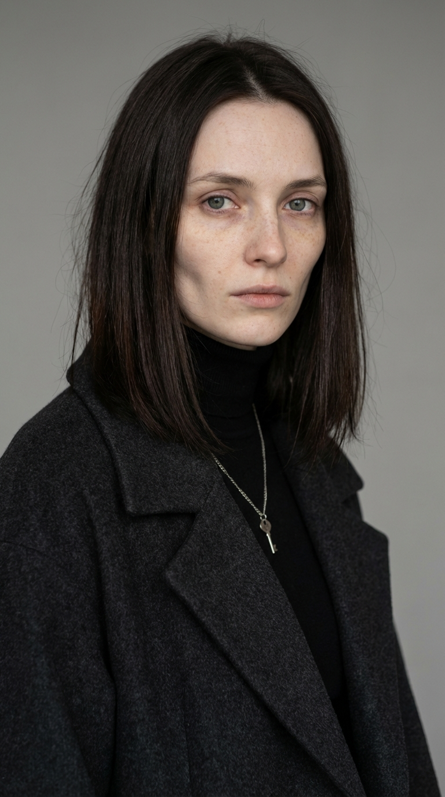
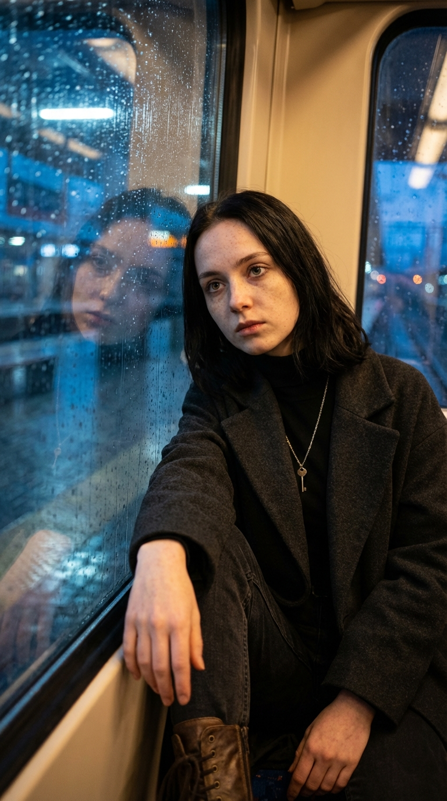
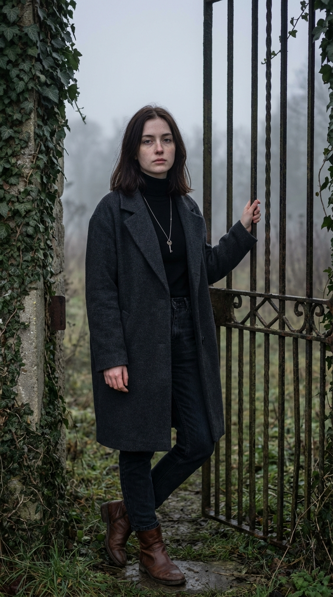
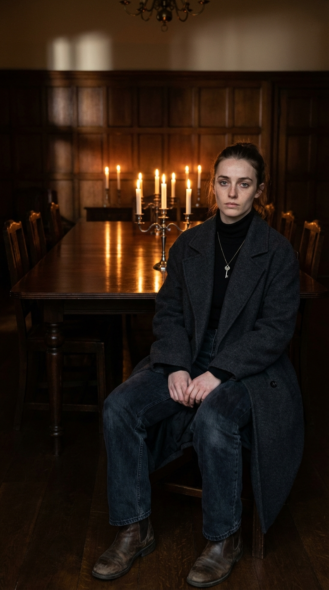
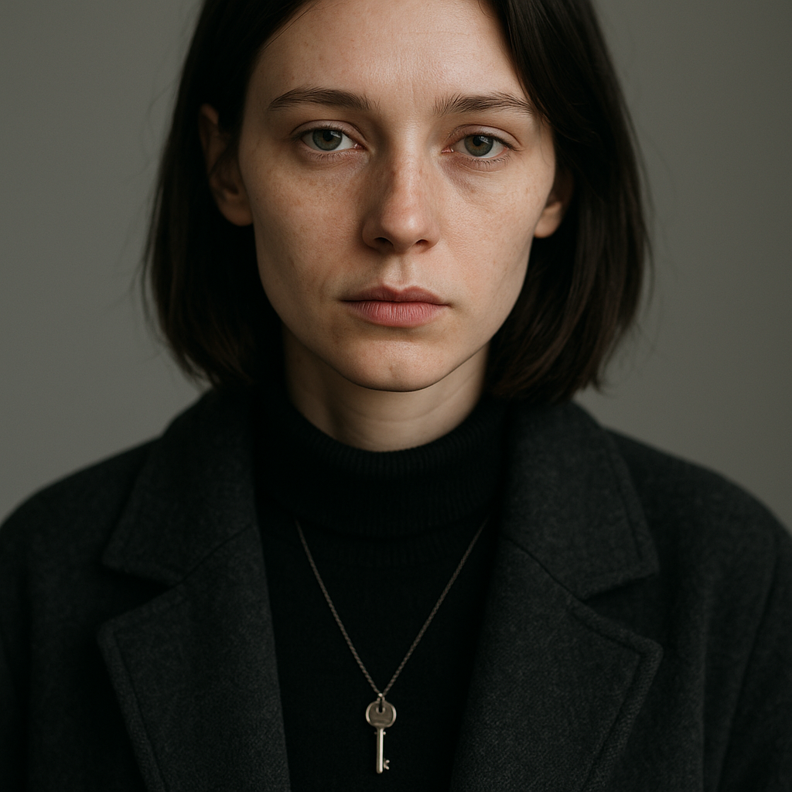
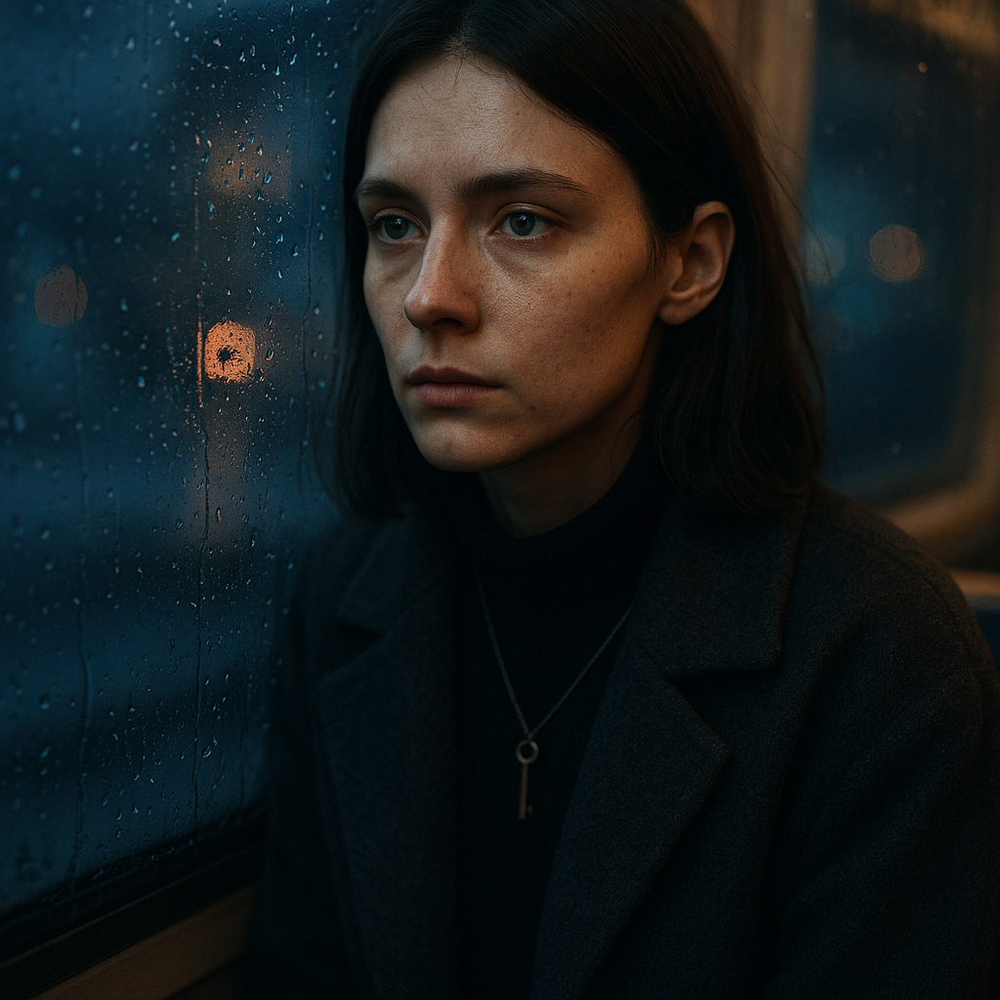
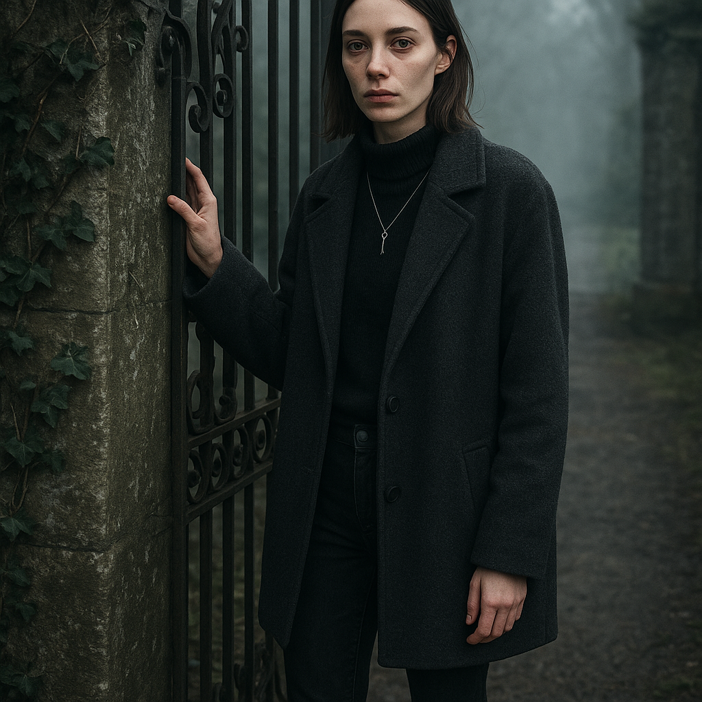
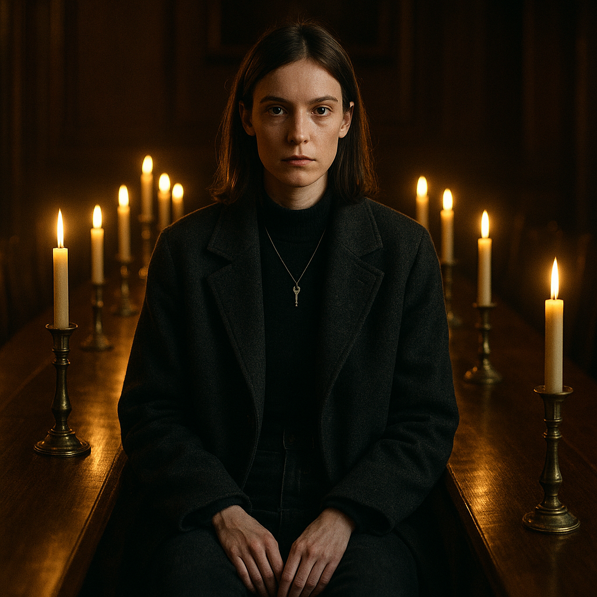

AI Microdrama Pipeline
Разбор, тестирование и сравнение пайплайна генерации AI-микродрам. Оригинальный гайд от Syntax AI переработан, промты протестированы через GPT-5 и Claude Opus 4.6, изображения сгенерированы через Nano Banana Pro.
Оптимизированный пайплайн
Оригинальный гайд описывает 10 шагов. Мы сжали до 5, объединив всю сценарную фазу в 1 промт и монтаж + субтитры в 1 шаг.
Сравнение: GPT-5 vs Claude Opus 4.6
Оба прогнали одинаковые промты: по отдельности (5 промтов) и суммарно (1 промт). Результаты ниже.
Токены и стоимость
| Сценарий | Промтов | Tokens | Стоимость |
|---|---|---|---|
| GPT-5 отдельно | 5 | 17,836 | ~$0.17 |
| GPT-5 суммарно | 1 | 6,759 | ~$0.06 |
| Claude отдельно | 5 | ~8,500 | ~$0.21 |
| Claude суммарно | 1 | ~7,000 | ~$0.18 |
Качество по критериям
| Критерий | GPT-5 | Claude | Вердикт |
|---|---|---|---|
| Пригодность для AI-видео | Сложные сцены (пожары, погони) | Тихие сцены (взгляды, свечи) | Claude |
| Консистентность (separate) | Step 1 ≠ Step 3 (разные сюжеты!) | OK — контекст сохраняется | Claude |
| Клиффхэнгеры | Action-heavy, жёсткие | Психологические, тихие | Зависит от жанра |
| Вирусность | Больше хуков (тексты, стримы) | Глубже эмоциональный якорь | GPT для TikTok |
| Scene Breakdown | Хорошие AI-промты | Более кинематографичные промты | Claude (чуть) |
| Общий скор | 7/10 | 8.5/10 | Claude |
Отдельно vs Суммарно — вердикт
| Метрика | 5 отдельных промтов | 1 суммарный промт |
|---|---|---|
| Консистентность | Проблема (без контекста) | Гарантирована |
| Токены (GPT-5) | 17,836 | 6,759 (−62%) |
| Стоимость (GPT-5) | ~$0.17 | ~$0.06 (−65%) |
| Время | 5 вызовов × 30-120с | 1 вызов × 60с |
| Рекомендация | Нет | Да |
Image Generation: Nano Banana Pro vs GPT-5-image-mini
Один и тот же персонаж, 4 ракурса. Промты идентичные.
Nano Banana Pro Gemini 3 Pro Image




Портрет • Поезд • Ворота усадьбы • Ужин при свечах — $0.14/кадр, ~$0.55 за 4
GPT-5-image-mini OpenAI




Те же ракурсы — $0.04/кадр, ~$0.17 за 4
Сравнение
| Критерий | Nano Banana Pro | GPT-5-image-mini |
|---|---|---|
| Фотореализм | 9/10 | 7.5/10 |
| Консистентность лица | 9/10 | 8/10 |
| Подвеска-ключ видна | 4/4 кадров | 3/4 кадров |
| Вертикальный 9:16 | Да, из коробки | Нет, даёт 1:1 |
| Текстуры (кожа, ткань) | Реалистичные | Сглаженные |
| Цена за кадр | $0.14 | $0.04 |
| Назначение | Продакшн | Превью / прототипы |
Стоимость сезона
| Компонент | Модель | За эпизод | За сезон (20) |
|---|---|---|---|
| Сценарий | Claude Opus 4.6 | $0.18 | $3.60 |
| Сценарий | GPT-5 | $0.06 | $1.20 |
| 16 кадров | Nano Banana Pro | $2.24 | $44.80 |
| 16 кадров (бюджет) | GPT-5-image-mini | $0.67 | $13.40 |
| Итого (премиум) | Claude + NB Pro | $2.42 | $48.40 |
| Итого (бюджет) | GPT-5 + GPT img | $0.73 | $14.60 |
* Без учёта animation (Kling/Veo), voiceover (ElevenLabs) и монтажа (CapCut Pro)
Рекомендации
Использовать один суммарный промт с секциями, не 5 отдельных. Это экономит 62% токенов, гарантирует консистентность, и сразу генерирует image prompts.
Core Format Rules
Из оригинального гайда — не меняются:
- 1 сцена = ~8 секунд
- 1 эпизод = 12–20 сцен (1.5–3 мин)
- Каждая сцена = 1 действие, 1 эмоция, 1 фокус
- Приоритет: крупные планы и простые композиции
- Избегать: сложное движение, драки, множество объектов
- Простота > сложность, освещение > движение, крупные планы > общие
Источник: AI Drama Guide.docx (Syntax AI). Тестирование: 7 апреля 2026. Модели: GPT-5 (openai/gpt-5-2025-08-07), Claude Opus 4.6, Nano Banana Pro (google/gemini-3-pro-image-preview), GPT-5-image-mini via OpenRouter.